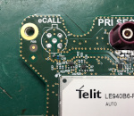
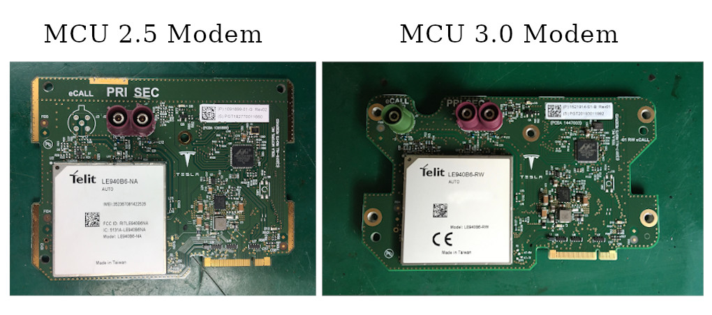
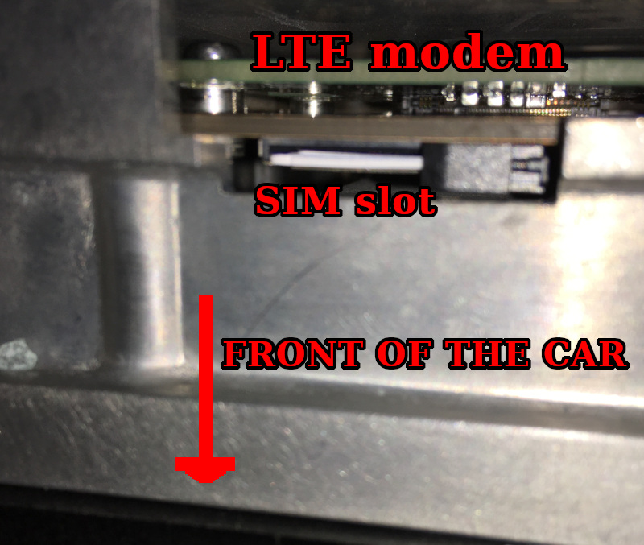

Recently I bought a used Tesla Model 3 delivered from the US. It was an excellent deal. The car is in great shape and condition. Since I’m in Europe, there are few nuances with this car. One of them is an American LTE modem. American and European LTE frequencies are slightly different; that’s why the original modem is not working properly here (only EDGE, which is awful). Here I will show how I replaced the original modem with a European version + some details about the actual Tesla modem 🙂
The modem is a separate board installed in the car multi-media computer (MCU). I don’t know much about Model S and Model X, but for Model 3, there are currently two options for the MCU. Version 2.5 was in 2018 – 2019, and version 3.0 since 2019. My car is equipped with MCU version 2.5.
Both computers are mostly backward-compatible, but there is a difference in the modem PCB design and fastening.
MCU 3.0 modem is compatible with MCU 2.5. All required holes are in place.
{kind=link}
 Currently, all European modems are 3.0 style. However, there is a single major difference between American and European modems. eCALL connector (European emergency service call) is no used in the American version, and actually, there is no room for this connector (in the American MCU).
Currently, all European modems are 3.0 style. However, there is a single major difference between American and European modems. eCALL connector (European emergency service call) is no used in the American version, and actually, there is no room for this connector (in the American MCU).
I know that someone is drilling a hole in the MCU cover, but I preferred to remove the eCALL connector at all.
{kind=link}
Modem overview
Tesla modem is based on the big integrated module from Telit. Currently, there are different models for different markets.
{kind=link}
Let’s take a look at the board.
{kind=link}
88EA1514 is an automotive version of the 88E1514 “Alaska” Ethernet PHY. This chip is used for data (from/to the internet) communication with the MCU. Interestingly, they are not using actual Ethernet. All analog pins are not connected. Instead, there is an SGMII Serializer/Deserializer (SerDes) in this IC. The SGMII pairs are used to communicate with the MCU board.
The voltage regulator is automotive class LM53625 configured for 3.8 volts output. The Telit module requires this unusual voltage value.
Now the most interesting part. The Telit module is a complex device on a separate board with multiple ICs. Let’s remove the shield:
{kind=link}
This module runs its own operating system and has a bunch of interfaces. At least, Tesla is using Ethernet, UART (for AT commands), control signals. Not sure about the audio interface, probably not.
{kind=link}
There is an eSIM chip on the backside of the board. Actually, it’s just a regular SIM in a regular IC package.
{kind=link}
This eSIM contains a phone number known for Tesla. Every eSIM number is associated with the actual vehicle. Tesla uses this information for the remote car wake-up (using SMS) when accessing mobile applications and mobile internet charges.
Sure, it’s a cool board, and I would like to do more reverse engineering of this device. Probably there will be more articles. Now let’s focus on the modem replacement.
Preparing the modem
The first important stage is to replace the eSIM chip with a regular SIM card of a local mobile operator.
The eSIM chip can be easily removed with hot air and a bit of flux.
{kind=link}
The regular SIM card can be connected directly to the eSIM pins. Here is a wiring diagram:
{kind=link}
I decided to create a small SIM wire-extender with a standard SIM holder. This holder can be mounted outside the modem/MCU for easier access.
{kind=link}
The extender wires were soldered and secured with hot glue and Kapton tape. Now the modem is ready for installation.
{kind=link}
Please note that there is an additional SIM card slot directly on the MCU board. In some software configurations, this slot is used instead of eSIM.
{kind=link}
SIM card is installed with a cut edge top. This slot is placed directly under the modem. SIM contacts are directed to the back of the card. Pushed up to the click.
To remove this SIM card, push to the SIM with some tool like a plastic screwdriver.
eSIM/SIM configuration is changing with a Tesla proprietary instrument Toolbox. It was a stand-alone desktop program. Now it’s a web service. No further details at this point.
Modem installation
The first step is a complete shutdown of the vehicle. Go to the main menu/Safety & Security and press “Power Off”. Then don’t touch any buttons/pedals and display.
For safety reasons, open the windows and left open both right doors. If you close the doors after the shutdown, it will be tough to get inside the car…
Next, remove the plastic cover near the front trunk and disconnect the Negative terminal of the 12 Volts battery.
{kind=link}
Then pull up and remove the back passengers’ couch and disconnect the high voltage battery.
{kind=link}
The most complex task is to remove the front passenger airbag and the glove box. Sorry, I don’t have a lot of photos at this stage.
There is a simple plastic panel at the bottom of the glove box. There are light and ventilation holes on this panel.
The plastic panel can be extracted by removing 4 plastic clips. I used tweezers for this operation. Over the plastic panel is the passenger knee airbag.
It’s a big plastic-metal panel secured with two self-tappers and four 8 mm screws. Please hold the airbag panel and don’t let it fall.
Then gently disconnect the two-wires airbag cable.
The glove box is holding with five self-tappers. One is under the plastic cover on the right side, and four are under the top decorative panel. Those self-tappers can be easily unscrewed when the glove box is opened. Then pull the glove box, and the whole construction should come out. Please note that there are two wires connected.
{kind=link}
Then locate four nuts on the front left of the car, under the hood. Let lose those nuts, but don’t remove them completely.
{kind=link}
Now, the MCU can be accessed relatively easily.
{kind=link}
The original 2.5 MCU modem is easy to remove. Just unscrew one screw on the modem metal bracket and pull down the modem just like an expansion card.
For the MCU 3.0, the whole aluminum cover should be unscrewed. At least the bottom part, don’t afraid to bend this cover.
In any case, the aluminum cover should be unscrewed for the new modem installation.
The new modem is pushed into a slot and secured with two screws (at least).
{kind=link}
I placed the SIM holder on the aluminum cover. It can easily be accessed without disassembling everything.
{kind=link}
Now, assemble everything back and connect the batteries in reverse order. Press the brake pedal; MCU should boot up in ~30 seconds. LTE should be available in a minute.
{kind=link}
Winner winner chicken dinner!
Thanks for reading!
Hello Oleg,
Happy with your for the new car ! Enjoy the driving and wish you safe driving.
Emil
Thanks!
Did you have to configure anything after replacing the sim card? Did you get internet access? Is it possible to remove the blower motor after taking out the airbag and glove compartment?
Yes, the internet is working. Additional configuration was not required in my case. Configuration could be done only with Tesla Toolbox.
The Blower motor is in the HVAC unit under the display:
https://ibb.co/17kvGB3
https://ibb.co/fn9QDQB
https://ibb.co/F6WCHTc
Are you still able to wakeup the car remotely?
You need ton configuré de phone number of the new sim card somewhere, isn’t it ?
I’m waking the car by sending a random SMS to the car’s phone number.
In the case of Android, it’s possible to patch the app and set a custom phone number. But I using iPhone.
This is the only inconvenience.
Very useful post, thanks. I am waiting for my 2021 MY USA and I am planning to perform the same modem replacement. Could you please advise where you bought the SIM extension ? Thanks.
I built my SIM extender using a SIM holder, board, and a few wires.
You can buy the SIM holder in any radio store or market.
I have a tesla model 3 2022 from China to lebanon, will order the MCU3 LE940B6-RW, and follow your steps.
What about the navigation data? Where you able to chnage the data from US navigation to EU navigation data?
Unfortunately, it’s not that easy. You will need to enter service+ mode to install custom map data from USB. Service+ is only accessible with the Tesla toolbox service.
It was possible to download map images from the Tesla server back in the day. Not sure it is possible now.